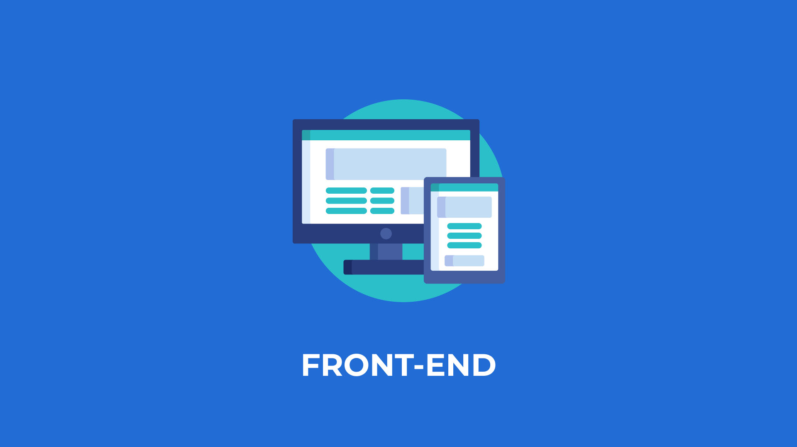
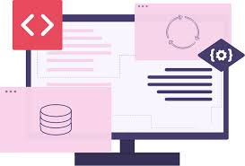

Ser un diseñador web exitoso requiere un aprendizaje continuo y la disposición para adaptarse a las cambiantes tecnologías y tendencias de diseño.Un diseñador web debe tener una combinación de habilidades técnicas, creativas y conocimientos específicos para tener éxito en la creación de sitios web efectivos y atractivos.
Contenido
¿Que es un diseñador full stack?
Es un profesional que tiene habilidades tanto en el diseño de la interfaz de usuario (UI) y la experiencia de usuario (UX) como en la programación del lado del cliente (frontend) y del lado del servidor (backend). En otras palabras, un diseñador full stack es versátil y puede trabajar en todas las capas de desarrollo de una aplicación web o sitio web.Algunas de esas areas son las siguientes:

Diseño de interfaz de usuario
Un diseñador full stack es capaz de crear diseños atractivos y funcionales para la parte frontal de una aplicación web o sitio web. Esto implica trabajar en la apariencia visual, la disposición de elementos, la tipografía, los colores y la creación de una experiencia de usuario intuitiva.

Experiencia de usuario
Además de diseñar la apariencia visual, un diseñador full stack se preocupa por la experiencia del usuario. Esto incluye la facilidad de navegación, la usabilidad, la accesibilidad y la interacción del usuario con la aplicación.

Desarrollo frontend
Un diseñador full stack puede escribir código HTML, CSS y JavaScript para implementar el diseño en el navegador del usuario. Esto implica traducir los diseños de UI/UX en código funcional y asegurarse de que la interfaz de usuario sea receptiva y se adapte a diferentes dispositivos.
Desarrollo backen
Aunque no siempre es necesario que un diseñador full stack sea un experto en desarrollo backend, debe tener al menos conocimientos básicos de lenguajes y tecnologías de backend como PHP, Ruby, Python, Node.js, bases de datos, servidores y sistemas de gestión de bases de datos (DBMS). Esto le permite trabajar de manera más efectiva con desarrolladores backend y comprender cómo interactúa la parte frontal con la parte trasera de una aplicación.
Conexion con base de datos
En muchos casos, un diseñador full stack también debe ser capaz de conectarse a bases de datos, realizar consultas y mostrar datos dinámicos en la interfaz de usuario.

Seguridad
Un diseñador full stack debe tener una comprensión básica de las mejores prácticas de seguridad web para proteger las aplicaciones de posibles vulnerabilidades y ataques.

Optimizacion y rendimiento
Debe saber cómo optimizar tanto el frontend como el backend para lograr un rendimiento óptimo y tiempos de carga rápidos.

Control de verciones
Familiaridad con sistemas de control de versiones como Git para colaborar en equipos de desarrollo y gestionar el código fuente de manera eficiente.

Si te interesa saber más sobre la vida que lleva un diseñador web, te facilitamos el siguiente video: